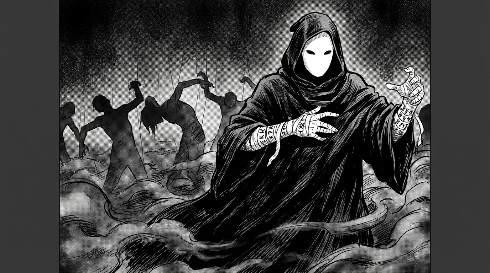
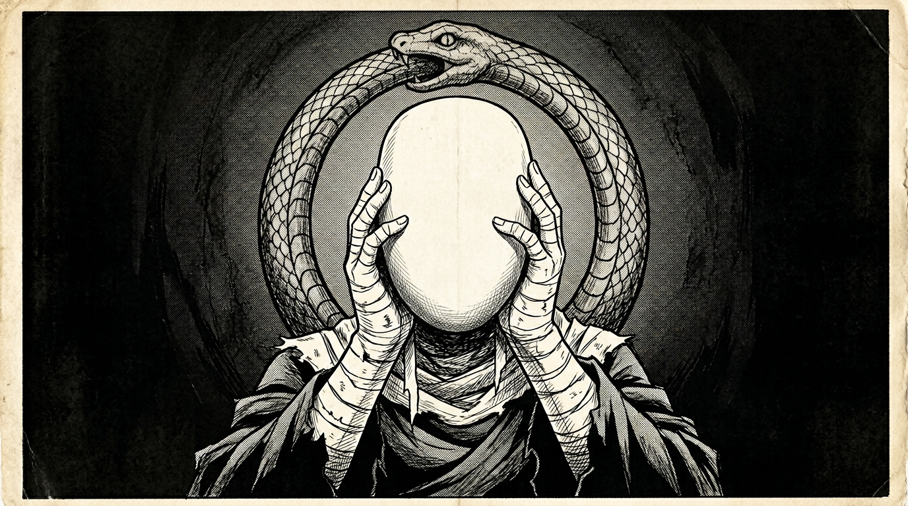

Городские легенды со всех уголков Ауракса

В каждом городе мира — от сталактитов Аква-Гранда до каньонов Нео-Дюны — рассказывают истории, от которых стынет кровь. Истории о магии, которая не должна существовать.
В тавернах Коалиции шёпотом пересказывают случай двадцатилетней давности: маг Воды средней руки, добрый человек, целитель, однажды исчез на месяц. Когда вернулся — он мог заставить людей танцевать. Не метафорически. Буквально: жертва двигалась против своей воли, как марионетка на невидимых нитях. Говорят, он управлял кровью — жидкостью внутри тела. Его схватили, но на допросе он рассмеялся и сказал: «Я всего лишь исцелял... по-новому». Кольцо Воды на его пальце было сломано пополам — не снаружи, а изнутри, словно кто-то вывернул его наизнанку.
В Тектроне инженеры обнаружили заброшенную мастерскую, где все инструменты были покрыты ржавчиной. Не обычной — за одну ночь. Сталь, которой сто лет, проржавела до трухи за двенадцать часов. На стене было нацарапано одно слово: «Распад». Маг Природы, работавший в этой мастерской, пропал. Его коллеги говорили, что в последние недели он стал одержим идеей «обратного роста» — не жизни, а смерти. Не созидания, а разложения.
В Аурумгарде ходит история о дворянине, который мог показывать людям то, чего нет. Не просто иллюзии-фокусы — он вкладывал картины прямо в разум жертвы. Человек стоял в пустой комнате и видел цветущий сад. Или поле битвы. Или свою мёртвую мать, протягивающую руки. Кольцо Света, которое он носил, по слухам, светило чёрным.
Учёные Коалиции относят всё это к категории «городских легенд». Маги не способны контролировать кровь, ускорять разложение или переписывать чужое восприятие — для этого нужно сломать фундаментальную природу кольца, а это, как известно, невозможно.
Но если это невозможно — почему в каждой фракции существует негласный список исчезнувших магов? Почему некоторые кольца, найденные на местах преступлений, сломаны изнутри? И почему каждый, кто начинает копать слишком глубоко, однажды просто перестаёт задавать вопросы?
Возможно, потому что ответы страшнее незнания.
Перехваченный документ Объединённой Разведки

Объект наблюдения: организация, условно обозначенная как «Омега». Фигурирует в донесениях агентов всех четырёх крупных фракций. Перекрёстный анализ указывает на единую сеть.
Что известно: Члены «Омеги» — не маргиналы и не фанатики из подвалов. Это влиятельные фигуры: генералы, торговые магнаты, советники при правителях. Днём они носят форму своей фракции. Ночью — глубокие плащи из ткани, поглощающей свет, и маски. Маски — пустые. Ни глаз, ни рта. Гладкая белая поверхность, будто лицо, которое забыли дорисовать.
На руках многих агентов обнаружены бинты, скрывающие шрамы. Предположительно — следы ритуалов, связанных с магией Крови. Характер шрамов указывает на самонанесение.
Символика: Уроборос — змей, пожирающий собственный хвост. Обнаружен на стенах заброшенных святилищ, на теле мёртвых агентов (татуировка на спине), и однажды — выжженный на полу камеры предварительного заключения, где содержался арестованный подозреваемый. Камера была заперта. Подозреваемый исчез.
Предполагаемая идеология: Нигилизм и перерождение. Перехваченные фрагменты переписки содержат повторяющуюся фразу: «Черновик будет сожжён. Чистый лист ждёт.» Контекст предполагает, что «Омега» считает текущий мир ошибкой — первым наброском, подлежащим уничтожению. Цель: создание «Нового Мира» по собственному образцу.
Угроза: Неопределённая, но потенциально катастрофическая. Количество агентов «Омеги», проникших в структуры власти, неизвестно. Масштаб их ресурсов — неизвестен. Конечный план — неизвестен.
Рекомендация: Усилить внутреннюю контрразведку. Не доверять никому.
Примечание от руки на полях: «Мы опоздали лет на двадцать.»